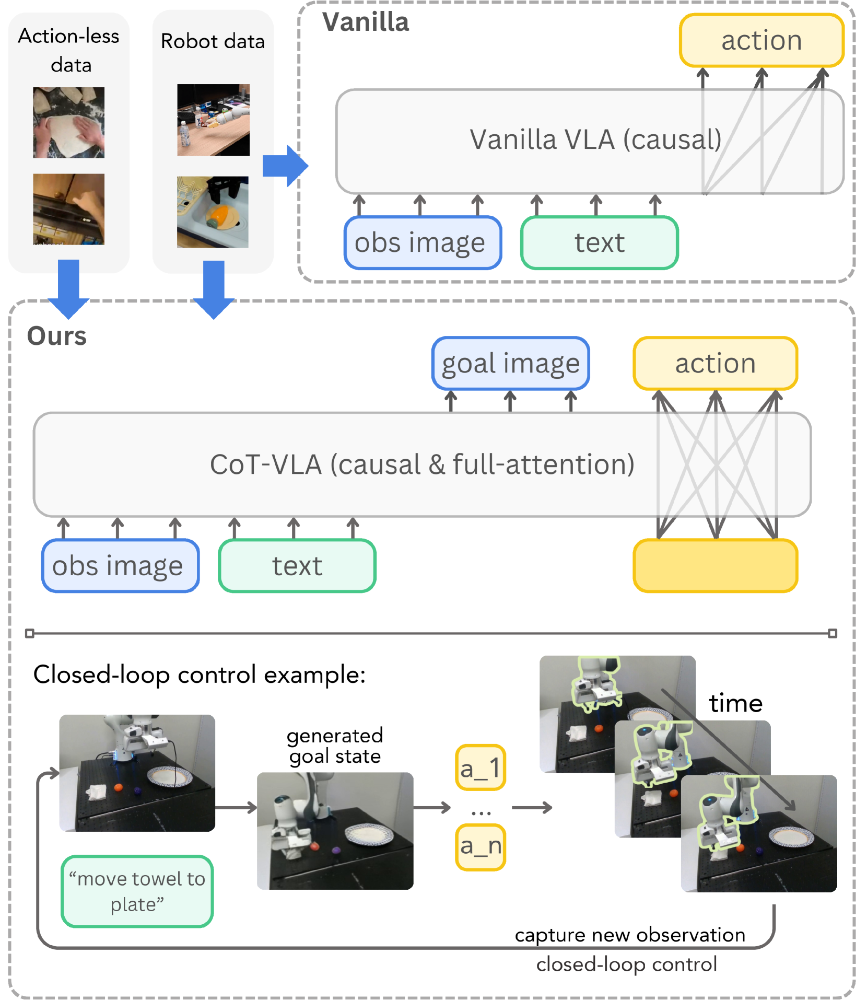

CoT-VLA: Visual Chain-of-Thought Reasoning for Vision-Language-Action Models
한 줄 요약 (TL;DR)
기존 VLA는 관찰→행동을 곧바로 매핑해 "왜 이렇게 움직여야 하는가"를 표현할 방법이 없다. CoT-VLA는 먼저 미래 이미지 프레임(=서브골 이미지 ŝt+n)을 autoregressive하게 예측하는 "visual chain-of-thought"를 거친 뒤 그 서브골로 조건화된 action chunk(길이 10)를 생성한다. Text/Image는 causal + next-token, action은 full attention을 쓰는 하이브리드 어텐션으로 학습. 7B VILA-U 백본 기반. Real Franka에서 SOTA 대비 +17%, LIBERO 평균 81.13%(Long 69.0), simulation 벤치에서 +6%.
1배경 · 문제의식
OpenVLA·RT-2 등 기존 VLA는 관찰과 언어에서 곧바로 discrete action token을 생성한다. 그러나 조작은 "무엇을 이룰지 → 어떻게 움직일지"의 계층적 문제다. LLM에서 chain-of-thought가 다단계 추론에 도움 되듯, VLA에도 중간 시각적 계획(서브골 이미지)이라는 CoT를 부여하면 특히 다단계·언어 접지·물체 상호작용에서 이득이 크다. 하지만 full autoregressive 이미지+action 구조는 지연이 커 로봇 실시간에 부적합 — CoT-VLA는 이미지는 AR로, action은 bidirectional/chunked로 뽑아 성능-속도를 동시에 잡는다.
2핵심 Contribution
- Visual Chain-of-Thought VLA — 관찰·언어 → 서브골 이미지(discrete visual token, 16×16×4) AR 생성 → 그 위에서 action chunk를 예측하는 명시적 시각 추론 파이프라인.
- 하이브리드 어텐션 — 텍스트·이미지 토큰은 causal + next-token, action 토큰은 서로 full attention으로 한꺼번에 예측(=chunk를 병렬 생성). 정확도·지연 균형.
- 실측 성능 향상 — Franka Real-world +17%, Bridge-V2 시나리오별(visual/motion/semantic/language) 각 50–70% 성공, LIBERO 평균 81.1%(SOTA VLA 대비 +6%).
3Method
백본 & 토큰
백본은 VILA-U 7B(unified vision-language, discrete visual token 사용, residual quantization). 이미지 1장 = 256×256을 16×16×4 discrete token으로 인코딩. Action은 7-DoF × 256 bin으로 7 토큰 per action discretization. Action chunk 크기 K=10 (총 70 action token).
Visual CoT (서브골 이미지 예측)
주어진 관찰 ot와 언어 ℓ에서 먼저 n 스텝 뒤 관찰의 discrete visual token 시퀀스를 next-token으로 예측 → 이것이 subgoal image ŝt+n. 이 서브골이 "무엇을 달성해야 하는가"의 시각적 스케치가 되어 action 예측을 조건화. 학습 시 n은 (전문가 궤적에서) 미래 스텝을 sampling.
하이브리드 어텐션
토큰 시퀀스는 [text ℓ, image ot, subgoal ŝt+n, action at:t+K−1] 형태. 앞부분(text·image·subgoal)은 strict causal + next-token으로 AR 생성/학습. 마지막 action 블록은 full attention으로 서로 참조 가능 → K개 action이 한 번의 forward로 동시에 예측(chunk generation), 지연을 K배 절감.
학습
OpenX Embodiment의 다양한 데이터로 사전학습 → 각 태스크(LIBERO, Bridge-V2, Franka)에 파인튜닝. 손실은 표준 next-token CE(text·image·action 모두 discrete token).
구현 요약
4실험 결과
LIBERO (표: 성공률 %)
| 모델 | Spatial | Object | Goal | Long | Avg |
|---|---|---|---|---|---|
| OpenVLA (7B) | — | — | — | — | ~75 |
| CoT-VLA-7B | 87.5 ±1.4 | 91.6 ±0.5 | 87.6 ±0.6 | 69.0 ±0.8 | 81.13 ±0.6 |
LIBERO 4개 suite 모두 SOTA. 특히 Long-horizon +큰 폭. OpenVLA 대비 평균 +6%.
Bridge-V2 real-world (일반화 유형별, 성공률 %)
| 일반화 유형 | Visual | Motion | Semantic | Language grounding |
|---|---|---|---|---|
| CoT-VLA | 65 | 60 | 50 | 70 |
특히 language grounding(색·물체 지칭 정확히 따라가기)에서 큰 이득.
Franka-Tabletop real-world
다양한 실물 조작(pick·place·pour·wipe·open drawer 등) 평균 +17% vs SOTA VLA. 특히 다단계 지시(예: "빨간 컵을 집어서 파란 접시 위에 뒤집어 놓아")에서 서브골 시각화가 성공 여부를 크게 좌우.
5Ablation (주요 발견)
- Subgoal 제거: LIBERO Long에서 성공률 급락 → 시각적 CoT가 장기 계획에 결정적.
- Chunk size K: K=1(스텝별)은 지연↑ + 성능도 감소, K=10이 정확도-지연 sweet spot.
- Full attention (action block) → causal로 바꾸면 chunk 내부 일관성이 떨어져 성공률 하락.
- Discrete image token(VILA-U)이 diffusion 서브골보다 학습·추론 파이프라인 단순 + 언어와의 joint AR에 유리.
- 서브골 horizon n: 너무 가까우면 예측이 trivial, 너무 멀면 부정확. n≈5–10 스텝이 최적.
6핵심 Figure / Table


7관련 링크
- arXiv 초록 · PDF
- 프로젝트 페이지 (video demos)
- CVPR 2025 발표
Q추가 질문 & 답변
아직 추가 질문이 없습니다. 이 논문에 대해 더 궁금한 점을 물어보시면 답변을 여기에 정리해 추가합니다.